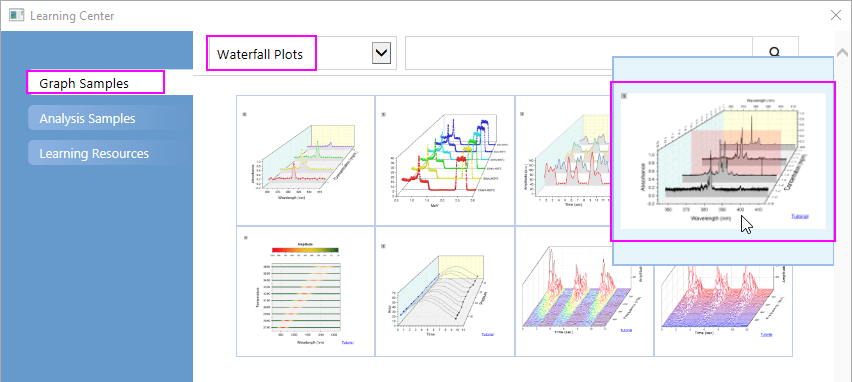
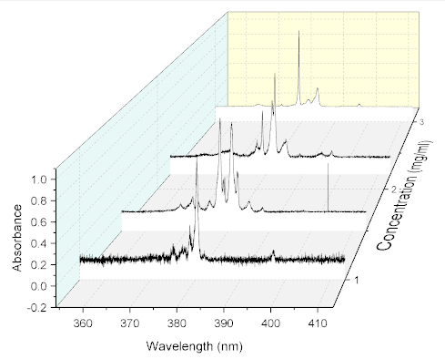
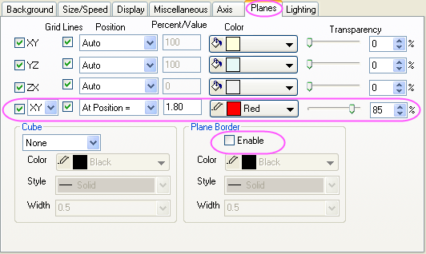
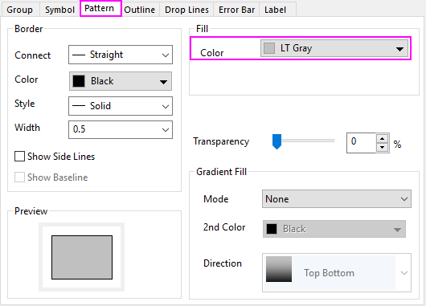
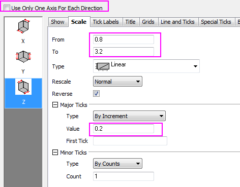
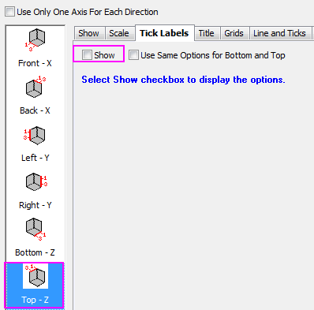
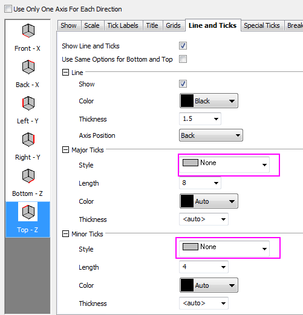
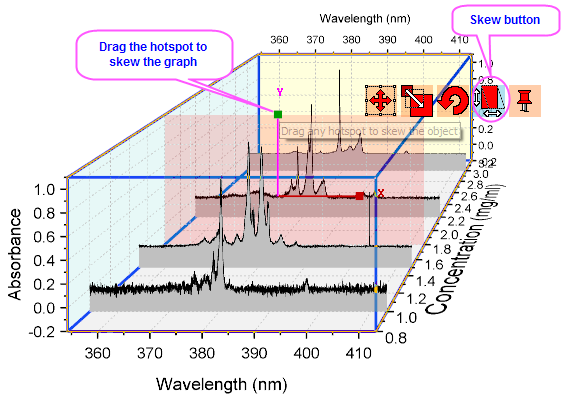

3D-Wasserfalldiagramm
3D-Waterfall
Zusammenfassung
In Origin können Sie ein von OpenGL unterstütztes 3D-Wasserfalldiagramm erstellen. Das 3D-Wasserfalldiagramm ist ein spezieller Typ von 3D-Wanddiagramm mit einer Wandbreite von 0. Sie können das Diagramm wie andere 3D-Diagramme auch drehen, in der Größe verändern, strecken und schräg anzeigen.

Was Sie lernen werden
Dieses Tutorial zeigt Ihnen, wie Sie:
- ein 3D-Wasserfalldiagramm zeichnen,
- eine Ebene an einer bestimmten Position in das Diagramm einfügen,
- das 3D-Wasserfalldiagramm schräg anzeigen.
Schritte
- Wählen Sie im Menü Hilfe: Lernzentrum, um den Dialog Lernzentrum zu öffnen. Wählen Sie Diagrammbeispiel im linken Bedienfeld des Dialogs und dann Wasserfalldiagramme in der Auswahlliste der Beispiele. Klicken Sie doppelt auf das Miniaturbild unten, um das Beispiel Waterfall Plots - 3D Waterfall zu öffnen.

- Aktivieren Sie die Arbeitsmappe Book4I und markieren Sie alle Spalten. Wählen Sie dann Zeichnen: 3D: 3D-Wasserfall im Hauptmenü, um ein 3D-Wasserfalldiagramm zu zeichnen.

- Wählen Sie Format: Layer... im Hauptmenü, um den Dialog Details Zeichnung zu öffnen. Wechseln Sie zur Registerkarte Ebenen, aktivieren Sie das entsprechende Kontrollkästchen, um eine XY-Ebene zu dem Diagramm hinzuzufügen, und deaktivieren Sie das Kontrollkästchen Aktivieren in der Gruppe Ebenengrenze. Legen Sie die restlichen Bedienelemente, wie im folgenden Bild zu sehen, fest:

- Klicken Sie auf das Pfeilsymbol links von Layer1, um alle Zeichnungen in dem Layer zu zeigen. Wählen Sie die erste Zeichnung in dem Layer (achten Sie darauf, das Kontrollkästchen neben dem Datensatzsymbol nicht zu deaktivieren), klicken Sie dann auf die Registerkarte Muster und setzen Sie die Füllfarbe auf Hellgrau.

- Klicken Sie auf OK, um den Dialog zu schließen. Klicken Sie doppelt auf eine Diagrammachse, um den Dialog Achsen aufzurufen. Deaktivieren Sie das Kontrollkästchen Nur eine Achse für jede Richtung zeigen. Wechseln Sie zur Registerkarte Skalierung und wählen Sie das Symbol der Z-Achse im linken Bedienfeld. Setzen Sie von und bis auf 0,8 bzw. 3,2 und den Inkrementwert der großen Hilfsstriche auf 0,2.

Gehen Sie zur Registerkarte Beschriftung der Hilfsstriche, vergewissern Sie sich, dass das Symbol Oben - Z ausgewählt ist, und deaktivieren Sie das Kontrollkästchen Zeigen, um die Beschriftung der Hilfsstriche auf der oberen Z-Achse auszublenden.

- Wechseln Sie zur Registerkarte Linie und Hilfsstriche, stellen Sie sicher, dass das Symbol Oben - Z ausgewählt ist und setzen Sie die Großen Hilfsstriche und Kleinen Hilfsstriche auf Keine.

- Klicken Sie auf OK, um den Dialog zu schließen. Klicken Sie auf den Würfel, um die fünf roten grafischen Bearbeitungssymbole zu aktivieren. Klicken Sie auf die vierte Schaltfläche - die Schaltfläche Schräg - und ziehen Sie an den X/Y-Elementen, um das Diagramm in X/Y-Richtung in die Schräge zu ziehen, so dass es ungefähr so aussieht:
